TEXT2NER
Opis działania i instrukcja obsługi aplikacji do przetwarzania opracowań i dokumentów historycznych: rozpoznawania jednostek nazwanych (NER), oraz linkowania (łączenia) jednostek nazwanych z bazami referencyjnymi.
TEXT2NER jest aplikacją wspomagającą wstępne opracowanie historycznych transkrypcji źródłowych. Przyjmuje tekst w postaci zwykłego ciągu znaków, dzieli go na strukturę akapitową i tworzy roboczy dokument TEI-XML, w którym rozpoznawane są jednostki nazwane a następnie można dokonać identyfikacji w zewnętrznych bazach referencyjnych (bazach wiedzy). Narzędzie zostało przygotowane przede wszystkim z myślą o tekstach z XIV-XVI wieku w języku łacińskim, polskim i niemieckim, zwłaszcza związanych z Królestwem Polskim, stąd odpowiednia zawartość słowników pomocniczych. Ale aplikacja jest mimo to na tyle uniwersalna że można przetwarzać w niej też inne teksty, w przykładach zamieszczonych w dalszej części opisu jest np. fragment hasła z polskiej wikipedii.
W obecnej wersji aplikacja rozpoznaje pięć typów tagów: persName, placeName, date, roleName oraz orgName. Nie wszystkie z nich muszą być używane w każdym przebiegu analizy. Użytkownik może zdecydować, które typy mają być włączone przed uruchomieniem rozpoznawania. Służy do tego okno parametrów aplikacji wyświetlane po kliknięciu przycisku Parametry u góry ekranu. Dodatkowo w osobnym oknie Słowniki można edytować wybrane słowniki pomocnicze używane przy wyszukiwaniu i interpretacji encji, bez modyfikowania kodu programu.
Aplikacja wykorzystuje duże modele językowe (LLM) z rodziny Gemini. Zadaniem modelu jest wyszukanie jednostek nazwanych (NER), następnie analiza ich formy (model przygotowuje formę podstawową, mianownik nazwy), analiza kontekstu wystąpienia nazwy np. w przypadku osób poszukiwane są dodatkowe informacje które mogą ułatwić identyfikację osoby - zawód, urząd. W przypadku miejsc - dodatkowe dane identyfikacyjne (np. informacje, że miejscowość położona jest koło innej większej miejscowości itp.). Na podstawie formy podstawowej nazwy, form dodatkowych (przygotowywanych przez aplikację z pomocą definiowalnych słowników np. polskie wersje łacińskich imion i nazw urzędów: Iohannis episcopus Missenensis będzie wyszukiwany także jako Jan biskup Miśni) oraz analizy kontekstu model przygotowuje plan zapytań do baz referencyjnych, które to zapytania są już wykonywane przez skrypt. Wyniki - lista kandydatów do identyfikacji jednostki nazwanej (encji) jest najpierw filtrowana (z pomocą modelu) np. osoby pod względem chronolgii - postać żyjąca w XVIII wieku nie może być osobą wymienioną w dokumencie z XVI wieku. Odfiltrowana lista kandydatów jest oceniania przez model, który ma do dyspozycji nie tylko nazwy, ale też dane z kontekstu dokumentu i dane z bazy wiedzy dotyczące kandydata do identyfikacji.
Co robi aplikacja
Aplikacja realizuje dwa powiązane, ale odrębne zadania.
- Rozpoznaje w tekście encje (zgodnie z ustawionymi parametrami) i zapisuje je w postaci TEI-XML.
-
Dla tagów
persNameiplaceNamemoże dodatkowo próbować przypisać identyfikację referencyjną, zapisując atrybutykeyiref.
W interfejsie WWW oba etapy są obecnie rozdzielone. Najpierw uruchamiane jest Rozpoznaj encje, które tworzy TEI-XML z tagami, a dopiero później opcjonalnie Identyfikuj encje, które próbuje powiązać osoby i miejsca z rekordami referencyjnymi.
Rozpoznawanie encji obejmuje obecnie:
persName- osoby i postaci historyczne, także w formach łacińskich i staroniemieckich,placeName- miejscowości, regiony, kraje i inne jednostki terytorialne,date- daty, z próbą zapisania atrybutuwhenw formacie ISO,roleName- urzędy, funkcje, godności i role społeczne lub kościelne,orgName- instytucje, organizacje i wspólnoty, zwłaszcza kościelne lub polityczne.
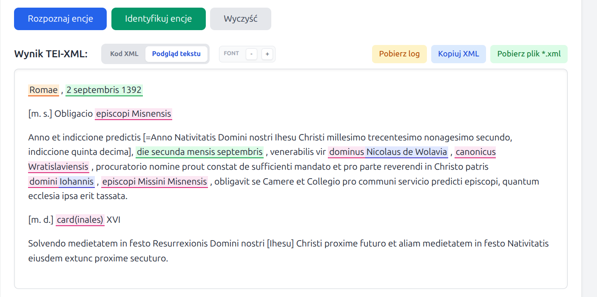
Identyfikacja referencyjna jest wykonywana wyłącznie dla persName i
placeName. Tagi date, roleName i
orgName są rozpoznawane i zapisywane w XML, ale nie są wiązane z
zewnętrznymi bazami.
Model działania
TEXT2NER wykorzystuje duże modele językowe (LLM). Model Gemini odpowiada za rozpoznanie encji w tekście, pomocniczą analizę form nazw oraz końcowe rozstrzyganie wyboru najlepszego kandydata podczas identyfikacji.
Proces identyfikacji encji:
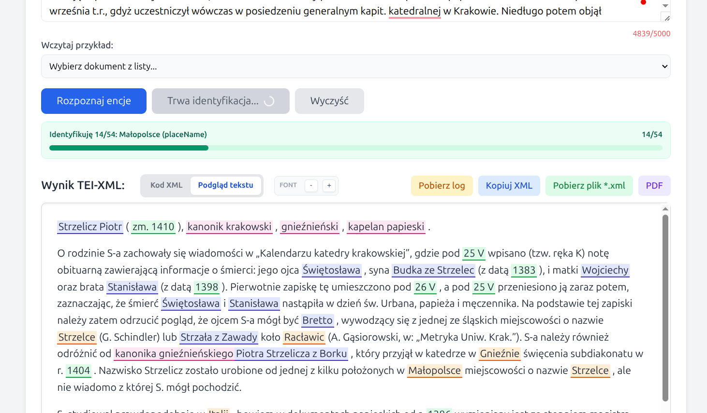
W części identyfikacyjnej aplikacja korzysta z kilku źródeł referencyjnych. Obecnie są to przede wszystkim: WikiHum, va.wiki.kul.pl oraz Wikidata. Dla trudniejszych przypadków dotyczących osób dostępny jest także dodatkowy fallback oparty o polską Wikipedię.
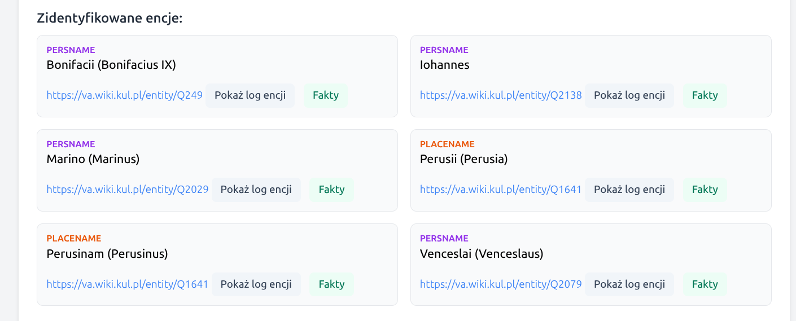
W sytuacjach nierozstrzygniętych aplikacja może wyświetlić listę najbardziej prawdopodobnych kandydatów do ręcznego wyboru przez użytkownika. Lista ta jest wstępnie filtrowana: dla osób pomijani są kandydaci z jednoznacznym konfliktem chronologicznym względem dat dokumentu, a liczba propozycji jest ograniczana, aby nie przerzucać na użytkownika całego szumu wyszukiwania. Encje z manualną identyfikacją posiadają etykietę która o tym informuje, możliwe jest także wycofanie się z ręcznego wyboru.
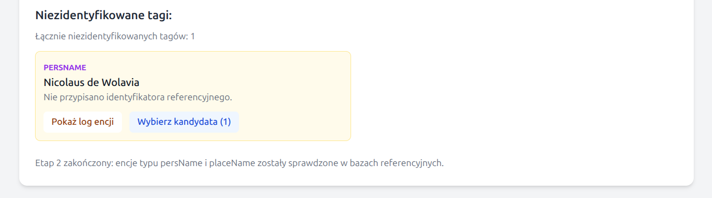
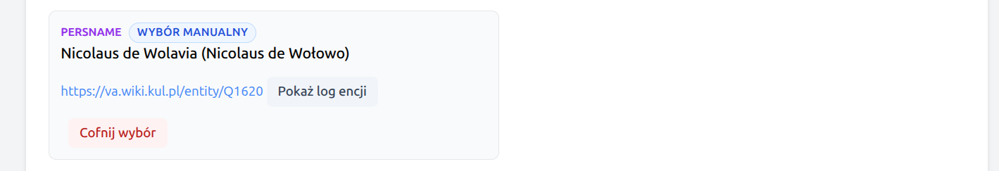
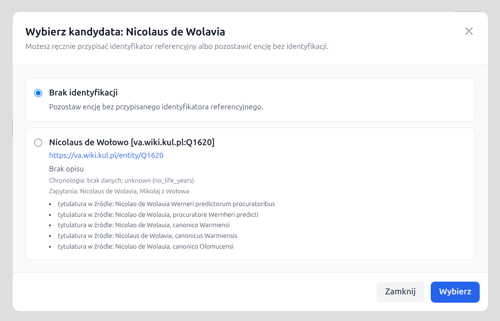
Jeżeli dopasowanie do rekordu referencyjnego nie
jest wystarczająco wiarygodne, ani użytkownik nie wybierze kandydata manualnie, encja pozostaje bez atrybutu ref, ale może
zachowuje znormalizowaną formę w atrybucie key.
Zapytania do Wikidaty są wykonywane ostrożnie: aplikacja ogranicza tempo requestów do
wikidata.org i respektuje odpowiedzi HTTP 429, odczytując
nagłówek Retry-After oraz ponawiając zapytanie po odczekaniu wskazanego
czasu. Ma to zmniejszyć ryzyko blokowania przez zewnętrzne usługi referencyjne.
Parametry analizy
W prawym górnym rogu interfejsu dostępny jest przycisk Parametry. Otwiera on okno, w którym można ustawić:
- które typy tagów mają być rozpoznawane w danym przebiegu,
- który model Gemini ma zostać użyty w analizie.
Domyślnie aktywne są cztery typy tagów:
persName, placeName, date i
roleName. Tag orgName można włączyć dodatkowo, jeśli użytkownik
chce rozpoznawać także instytucje.
Domyślnym modelem jest
Gemini 3.1 Flash Lite Preview
(gemini-3.1-flash-lite-preview), ale można wybrać także
Gemini 3 Flash Preview
(gemini-3-flash-preview).
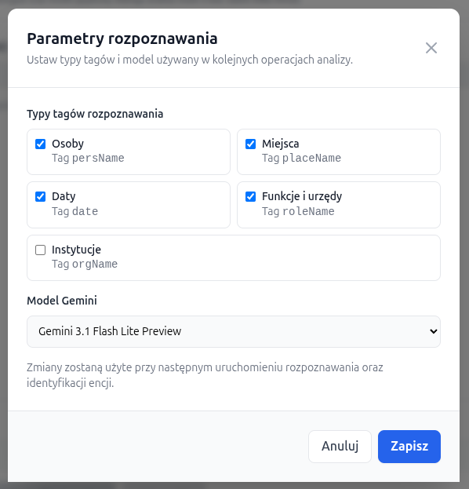
Słowniki pomocnicze
Obok przycisku Parametry dostępny jest także przycisk Słowniki. Otwiera on osobne okno z czterema zakładkami, odpowiadającymi czterem słownikom pomocniczym używanym przez aplikację.
- słownik historycznych i łacińskich form imion,
- słownik historycznych i łacińskich nazw miejsc,
- słownik polskich odpowiedników przymiotnikowych od nazw miejsc,
- słownik urzędów, funkcji i godności używany przy dodatkowych zapytaniach pomocniczych.
Każdy słownik można edytować w postaci prostych par klucz -> wartość:
dodawać nowe wiersze, usuwać istniejące i zapisać nową wersję bez restartu aplikacji.
Przy zapisie aplikacja sprawdza, czy każdy wiersz zawiera niepusty klucz i wartość,
odrzuca zduplikowane klucze, tworzy kopię bezpieczeństwa pliku .bak
i natychmiast przeładowuje słowniki w pamięci procesu.
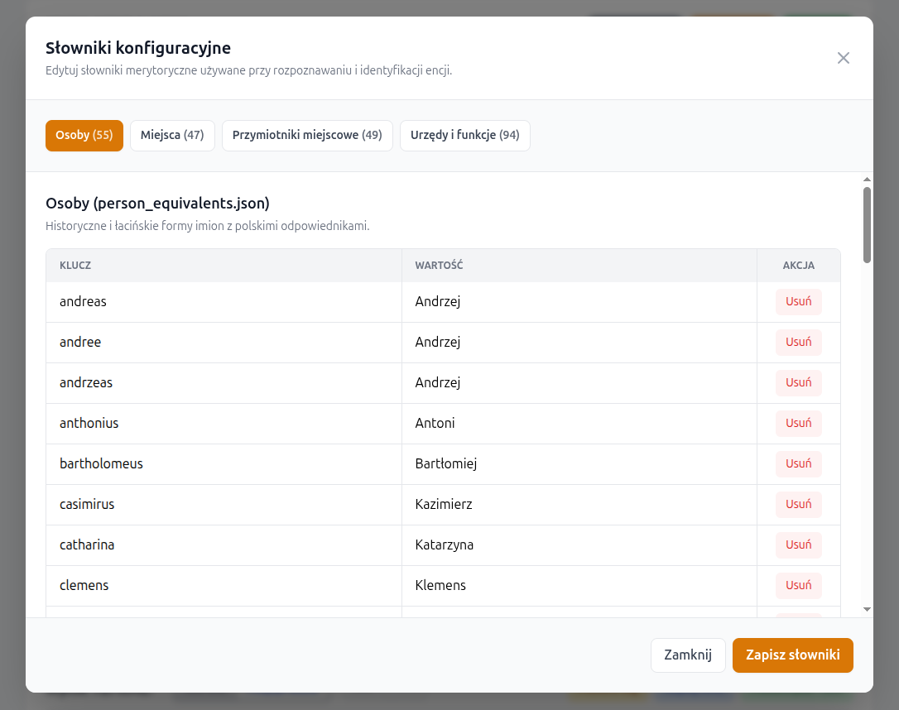
Przebieg przetwarzania
1. Wprowadzenie tekstu
Użytkownik wkleja tekst do głównego pola formularza. Obowiązuje limit 5000 znaków. Można też skorzystać z jednego z przykładowych dokumentów dostępnych w interfejsie.
2. Rozpoznanie encji
Po kliknięciu Rozpoznaj encje aplikacja tworzy nowy log diagnostyczny, automatycznie usuwa pliki logów starsze niż 48 godzin, a następnie buduje roboczy TEI-XML i otagowuje w tekście tylko te typy encji, które zostały wcześniej zaznaczone w oknie parametrów.
Tagowanie wykonywane jest w dwóch przejściach modelu Gemini: pierwszym, rozpoznającym encje w tekście, oraz drugim korekcyjnym, który próbuje uzupełnić pominięcia i ograniczyć oczywiste pomyłki. Wynik tego etapu nie zawiera jeszcze identyfikacji referencyjnej, ale jest już pełnym TEI-XML nadającym się do dalszego przeglądu, korekty i zapisania.
3. Ręczna korekta w podglądzie
Po rozpoznaniu encji użytkownik może przejść do widoku Podgląd tekstu. W tym widoku tagi są kolorowane, a tekst można czytać w formie zbliżonej do zwykłej lektury.
Dostępna jest także ręczna edycja encji:
- usunięcie istniejącego tagu,
- zmiana typu tagu na inny,
- dodanie nowego tagu po zaznaczeniu fragmentu nieotagowanego tekstu.
Edycja odbywa się z poziomu menu kontekstowego. Tagi nie mogą się nakładać. Jeżeli po identyfikacji użytkownik ręcznie zmieni tagi, atrybuty identyfikacyjne są czyszczone i identyfikację można uruchomić ponownie dla poprawionej wersji XML.
4. Identyfikacja encji
Po kliknięciu Identyfikuj encje aplikacja analizuje tylko tagi
persName i placeName, pobiera kandydatów z baz
referencyjnych, ocenia ich zgodność z kontekstem i wybiera najbardziej prawdopodobne
dopasowanie.
Na początku tego etapu tworzony jest osobny log diagnostyczny. Aplikacja odczytuje także cały tekst z dokumentu, aby wydobyć z niego daty pomocne przy ocenie chronologicznej kandydatów osobowych.
Jeśli identyfikacja się powiedzie, tag otrzymuje atrybuty key oraz
ref. Jeśli nie, encja pozostaje w XML bez pełnego powiązania
referencyjnego.
Dla encji nierozstrzygniętych aplikacja może przygotować krótką listę kandydatów do
ręcznego wyboru. W oknie wyboru zawsze dostępna jest także opcja
Brak identyfikacji. Jeśli użytkownik wybierze kandydata ręcznie,
aplikacja oznacza taki wybór w interfejsie jako wybór manualny oraz
zapisuje w XML atrybuty cert="medium" i resp="#manual".
Ręczny wybór można cofnąć, przywracając encję do listy niezidentyfikowanych.
5. Wynik końcowy
Aplikacja wyświetla dwa widoki wyniku:
- Kod XML - struktura TEI-XML gotowa do dalszej pracy i zapisu,
- Podgląd tekstu - czytelny widok z kolorowaniem tagów i dymkami z informacjami pomocniczymi.
Poniżej pokazywana jest także lista encji zidentyfikowanych oraz lista tagów, których nie udało się wiarygodnie powiązać z rekordem zewnętrznym.
Z poziomu interfejsu można również pobrać pełny log diagnostyczny bieżącego przebiegu oraz wyświetlić fragment logu odnoszący się do konkretnej encji. Ułatwia to ocenę, dlaczego dany kandydat został wybrany lub odrzucony.
Przy zidentyfikowanych encjach dostępny jest także przycisk
Fakty. Otwiera on okno z dwoma panelami: po lewej stronie widoczne
są dane wydobyte z dokumentu dla danej encji, takie jak tekst otagowany,
context_clues i context_years, a po prawej dane wybranej
encji referencyjnej, w tym etykieta, opis i najważniejsze fakty z właściwości
(key_facts).
6. Zapis wyników
Wynik działania aplikacji można zachować w formacie TEI-XML, poprzez skopiowanie do schowka (przycisk Kopiuj XML), pobranie pliku (Pobierz plik *.xml). Można też pobrać czytelnie sformatowany plik pdf (przycisk PDF).
Log diagnostyczny
Ponieważ część decyzji aplikacji opiera się na modelu językowym i danych zewnętrznych, ważnym elementem narzędzia jest log diagnostyczny. Rejestrowane są w nim kolejne kroki rozpoznawania i identyfikacji, w tym analiza formy encji, lista kandydatów, ocena chronologiczna dla osób oraz krótkie uzasadnienie wyboru zwrócone przez model Gemini.
Log jest tworzony automatycznie dla każdego przebiegu rozpoznawania i identyfikacji. Aplikacja usuwa pliki logów starsze niż 48 godzin, aby nie zaśmiecać dysku serwera. Pełny log można pobrać przyciskiem Pobierz log, natomiast w boxach encji dostępny jest przycisk Pokaż log encji, który wyświetla tylko fragment dotyczący wybranego tagu. Fragment logu można skopiować do schowka bezpośrednio z okna modalnego.
Oprócz surowego logu aplikacja prezentuje wybrane informacje z procesu identyfikacji w bardziej skróconej formie w oknie Fakty. Jest to szybszy sposób sprawdzenia, jakie wskazówki zostały wyciągnięte z dokumentu i jakie dane z rekordu referencyjnego przemawiały za danym dopasowaniem.
Co zawiera log diagnostyczny, np. dla osoby (persName)? Poniżej znajdują się fragmenty logu dla tekstu "Nicolaum Lanczkoroński" z edycji Acta Alexandrii, dokument nr 10 (str. 9-10, "Sultan Bajazet II zawiera rozejm z Janem Olbrachtem..."). Pierwszy fragment zawiera wstępną analizę encji:
[TEXT2NER-DIAG] Analiza encji 'Nicolaum Lanczkoroński' (persName):
normalized_best='Nicolaus Lanczkoroński',
confidence=high,
lemma_candidates=['Nicolaus Lanczkoroński', 'Mikołaj Lanckoroński'],
surface_variants=['Nicolaum Lanczkoroński', 'Nicolaus Lanczkoroński'],
office_terms=[],
place_terms=[],
context_clues=['uczestniczył w uzyskaniu rozejmu (treugae pacis)',
'prowadził negocjacje z imperatorem Turków'],
context_years=[1501]
system:
- wysyła do Gemini prompt z prośbą o prostą analizę formy encji,
- parsuje JSON zwrócony przez model,
- normalizuje i uzupełnia wynik po stronie Pythona.
Prompt do modelu Gemini oczekuje w wyniku pól:
- normalized_best = znormalizowana forma podstawowa nazwy do wyszukiwania
- confidence = np. high - jak bardzo model jest pewny analizy formy nazwy
- lemma_candidates = inne warianty bazowe nazwy używane później do budowania zapytań, część z nich może pochodzić z modelu, a część może zostać uzupełniona przez kod ze słowników
- surface_variants = formy pisowni nazey lub fleksji, które aplikacja dodatkowo uznaje za przydatne przy wyszukiwaniu
- office_terms = urzędy i funkcje bezpośrednio związane z osobą
- place_terms = wskazówki lokalizacyjne typu „z Krakowa”, „biskup krakowski”, „żył w Prusach”
- context_clues = dodatkowe fakty kontekstowe, dotyczące osoby, pochodzące z analizowanego dokumentu
Wyniki w tych polach są przetwarzane przez skrypt (usuwanie duplikatów, porządkowanie list, do pól
lemma_candidates
i surface_variants mogą zostać dodane znane polskie odpowiedniki ze słowników, dla tagów placeName działa jeszcze dodatkowa walidacja
weryfikująca czy na pewno mamy do czynienia z miejscem/miejscowością, pole context_years jest uzupełniane przez skrypt
na podstawie ewentualnych dat występujących w dokumencie) Kolejnym krokiem procesu zapisanym logu jest przeszukiwanie tzw. specjalistycznych instancji wikibase, będących historycznymi bazami referencyjnymi: WikiHum i va.wiki.kul.pl.
[TEXT2NER-DIAG] Plan zapytań dla 'Nicolaum Lanczkoroński' (persName):
['Nicolaum Lanczkoroński', 'Nicolaus Lanczkoroński', 'Mikołaj Lanckoroński']
[TEXT2NER-DIAG] Special:Search 'Nicolaum Lanczkoroński' -> WikiHum: []
[TEXT2NER-DIAG] Filtrowanie WikiHum dla persName: []
[TEXT2NER-DIAG] Special:Search 'Nicolaus Lanczkoroński' -> WikiHum: []
[TEXT2NER-DIAG] Filtrowanie WikiHum dla persName: []
[TEXT2NER-DIAG] Special:Search 'Mikołaj Lanckoroński' -> WikiHum:
['Q159734', 'Q159736', 'Q159735']
[TEXT2NER-DIAG] Filtrowanie WikiHum dla persName:
['WikiHum:Q159734', 'WikiHum:Q159736', 'WikiHum:Q159735']
[TEXT2NER-DIAG] Special:Search 'Nicolaum Lanczkoroński' -> va.wiki.kul.pl: []
[TEXT2NER-DIAG] Filtrowanie va.wiki.kul.pl dla persName: []
[TEXT2NER-DIAG] Special:Search 'Nicolaus Lanczkoroński' -> va.wiki.kul.pl: []
[TEXT2NER-DIAG] Filtrowanie va.wiki.kul.pl dla persName: []
[TEXT2NER-DIAG] Special:Search 'Mikołaj Lanckoroński' -> va.wiki.kul.pl: []
[TEXT2NER-DIAG] Filtrowanie va.wiki.kul.pl dla persName: []
[TEXT2NER-DIAG] Kandydaci ze źródeł specjalistycznych dla 'Nicolaum Lanczkoroński' (persName):
['WikiHum:Q159736', 'WikiHum:Q159735', 'WikiHum:Q159734']
Plan zapytań zawiera warianty nazwy z pól
normalized_best, lemma_candidates, surface_variants. Przeszukiwana jest najpierw
baza WikiHum, następnie va.wiki.kul.pl, obie z użyciem wyszukiwania rozmytego (fuzzy). Wyszukanych kandaydatów w postaci identyufikatorów QID aplikacja zapisuje do dalszej analizy. W tym przypadku baza va.wiki.kul.pl nie zwróciła żadnych kandydatów, zaś baza WikiHum zwróciła 3 kandydatury.
Dalsza analiza w przypadku osób (tag persName) obejmuje analizę chronologiczną wyszukanych w poprzednim kroku kandydatów. Bieżący dokument ma jedną datę (1501 - pozyskaną wcześniej przez skrypt), która jest odnośnikiem dla tej analzy. Fragment logu wygląda następująco:
[TEXT2NER-DIAG] Chronologia kandydatów dla 'Nicolaum Lanczkoroński'
(persName, źródła specjalistyczne), context_years=[1501]:
1. Mikołaj Lanckoroński [WikiHum:Q159736]
life: zm. 1597
temporal: compatible
reason: lata kontekstu mieszczą się w możliwym okresie życia;
oszacowano narodziny <= 1497 z daty śmierci i limitu 100 lat
queries: ['Mikołaj Lanckoroński']
2. Mikołaj Lanckoroński [WikiHum:Q159735]
life: zm. 1520
temporal: compatible
reason: lata kontekstu mieszczą się w możliwym okresie życia;
oszacowano narodziny <= 1420 z daty śmierci i limitu 100 lat
queries: ['Mikołaj Lanckoroński']
3. Mikołaj Lanckoroński [WikiHum:Q159734]
life: zm. 1462
temporal: conflict
reason: kontekst po śmierci kandydata (1462)
queries: ['Mikołaj Lanckoroński']
Dla każdego z kandydatów aplikacja pobiera z bazy referencyjnej (tu WikiHum) dodatkowe dane np. datę urodzin, śmierci, opis itp. Data urodzin i/lubn śmierci, jeżeli dostępne są daty pozycjonujące dokument w czasie, pozwalają na prostą selekcję na podstawie chronologii. Dla każdego z kandydatów aplikacja wypełnia pola:
- life: informacje op latach życia
- temporal: czy ramy chronologiczne lat życia osoby pasują do chronologii dokumentu (compatible lub conflict)
- reason: wyjaśnienie na temat zawartości pola temporal, dlaczego dany kandydat pasuje do dokumentu lub nie
- queries: z jakiego zapytania pochodzi kandydat
Kandydaci, którzy przeszli selekcję chronologiczną, są analizowani w dalszym etapie, przez model Gemini, który podejmuje decyzję czy któryś z nich wystarczająco pasuje do dokumentu i może zostać wskazany jako dobrze zidentyfikowana postać historyczna. Fragment logu z wynikami działania modelu:
[TEXT2NER-DIAG] Wybrany kandydat dla 'Nicolaum Lanczkoroński' (persName):
Mikołaj Lanckoroński [WikiHum:Q159735]
life=zm. 1520
temporal=compatible
reason=lata kontekstu mieszczą się w możliwym okresie życia;
oszacowano narodziny <= 1420 z daty śmierci i limitu 100 lat
queries=['Mikołaj Lanckoroński']
[TEXT2NER-DIAG] Uzasadnienie Gemini dla 'Nicolaum Lanczkoroński' (persName):
reason=Mikołaj Lanckoroński (zm. 1520) jest kandydatem najbardziej dopasowanym
chronologicznie do daty 1501. Kandydat Q159734 zmarł przed wydarzeniem,
a Q159736 (zm. 1597) byłby w 1501 roku zbyt młody, by pełnić funkcje
dyplomatyczne przy imperatorze Turków.;
matched_signals=['zgodność chronologiczna z rokiem 1501',
'aktywność życiowa w XVI wieku',
'wykluczenie kandydatów zmarłych przed 1501']
Log zawiera najpierw wynik wyboru modelu wraz z polami które charakteryzowały danego kandydata, a w następnym wpisie szczegółowe uzasadnienie tego wyboru. Pole
matched_signals
zawiera krótką listę "sygnałów decyzyjnych" zwróconych przez model.
Można to traktować jako „najważniejsze argumenty”, które Gemini uznało za rozstrzygające.
W logu mogą pojawiać się także wpisy dotyczące ograniczania liczby zapytań do Wikidaty.
Jeżeli Wikidata zwróci odpowiedź HTTP 429, aplikacja zapisuje informację o
pauzie i ponowieniu zapytania. Ma to znaczenie zwłaszcza przy dłuższych dokumentach, w
których jedna analiza może wygenerować wiele wariantów zapytań dla kolejnych osób i
miejsc.
Diagram procesu
Poniżej zamieszczony jest uproszczony diagram procesu przetwarzania tekstów dokumentów do formatu TEI-XML z tagowaniem encji i identyfikacją w bazach referencyjnych. Szczegółowy diagram dostępny jest na dole strony.
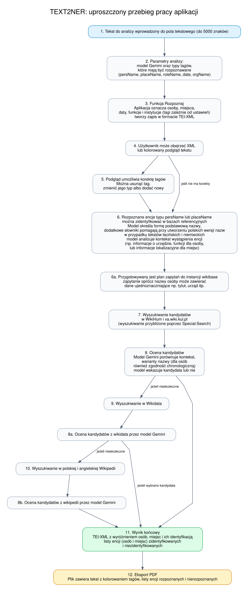
Uwagi i ograniczenia
- Tekst wejściowy jest obecnie ograniczony do 5000 znaków.
- Identyfikacja referencyjna dotyczy wyłącznie
persNameiplaceName. - Wyniki rozpoznawania i identyfikacji mają charakter pomocniczy i powinny być traktowane jako etap roboczy opracowania naukowego.
- Analiza może trwać od kilkunastu sekund do kilku minut, zależnie od długości tekstu, liczby encji, wybranego modelu i czasu odpowiedzi źródeł zewnętrznych.
- Wikidata ogranicza intensywność ruchu automatycznego. Aplikacja spowalnia zapytania i ponawia je po odpowiedzi
HTTP 429, ale w okresach większego obciążenia etap identyfikacji może przez to trwać dłużej. - W przypadku bardzo trudnych, wieloznacznych lub rzadkich form historycznych część encji może wymagać korekty ręcznej.
Przykłady
Po poprawnym rozpoznaniu i identyfikacji encja może zostać zapisana na przykład w takiej postaci:
<persName key="Fryderyk Jagiellończyk"
ref="https://wikihum.lab.dariah.pl/entity/Q152903">Fridericus</persName>
Jeżeli identyfikator został przypisany ręcznie przez użytkownika na podstawie listy
kandydatów, aplikacja dodaje ślad tej decyzji w atrybutach cert i
resp:
<persName key="Iohannes von Kittlitz"
ref="https://va.wiki.kul.pl/entity/Q2138"
cert="medium"
resp="#manual">Iohannis</persName>
Dla daty możliwy jest zapis z atrybutem when, na przykład:
<date when="1446-07-04">4 iulii 1446</date>Przykładowe wyniki działania aplikacji (pliki TEI-XML i PDF)
-
Acta Alexandri Regis Poloniae, Magni Ducis Lithuaniae etc. (1501-1506), red. Fryderyk Papée, Kraków 1927. Dokument nr 3, str. 2 (Frühneuhochdeutsch).
-
Acta Alexandri Regis Poloniae, Magni Ducis Lithuaniae etc. (1501-1506), red. Fryderyk Papée, Kraków 1927. Dokument nr 10, str. 9 (łacina).
-
Wikipedia, fragment hasła: Jan Kostka (język polski)
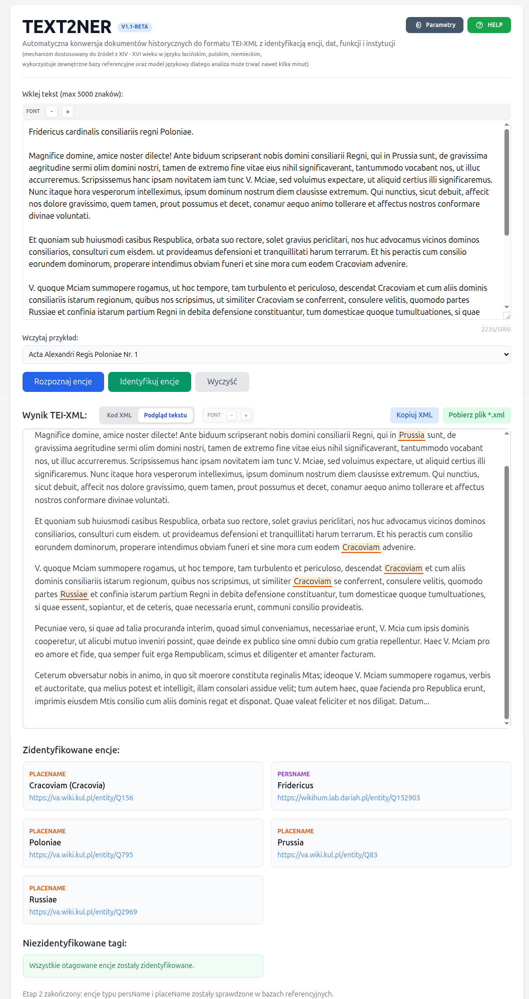
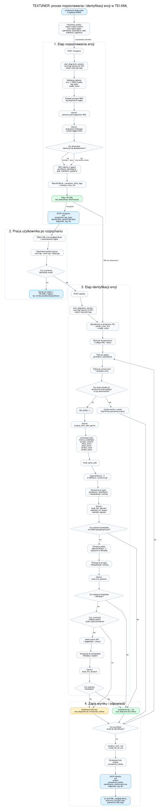